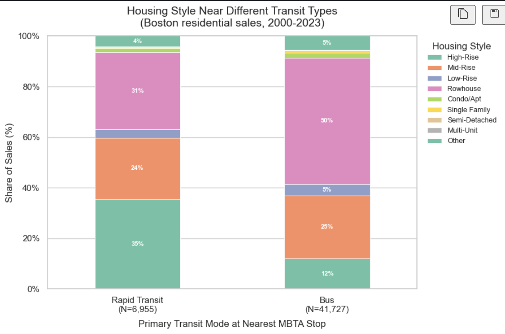
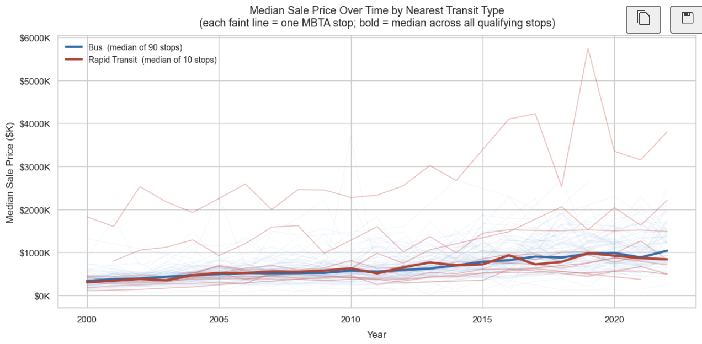
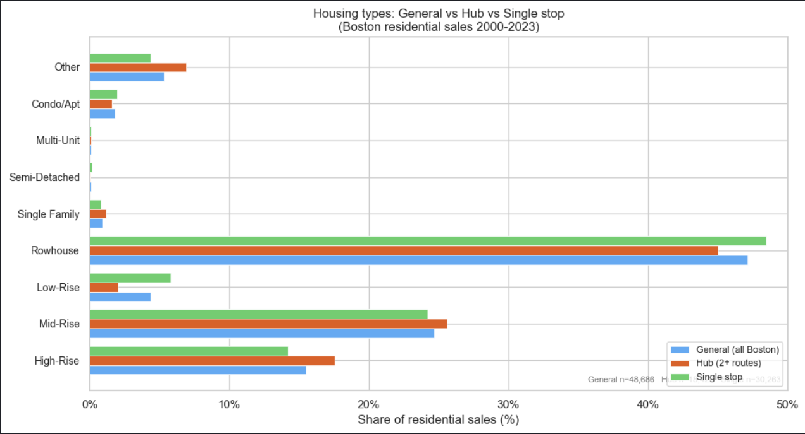
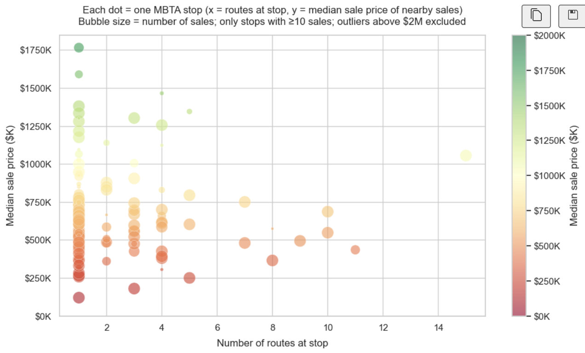

Beckett Devoe · Vis & Society 2026 · Housing Affordability
Subtheme & Research Questions
Subtheme: Transit / Transit-Oriented Development
Background reading: TOD literature on connectivity and development patterns; personal observation in the
Boston area; housing listings (e.g., dormspam, Zillow).
Do different types of local transit options available have different types of housing surrounding
them? Motivation: The TOD literature suggests that different transit nodes serve different roles in a
metropolitan region, with higher connectivity transit supporting denser and more mixed use development. From
personal observation in the Boston area, subway stations often appear surrounded by apartment buildings and
mixed use development, while commuter rail stations are more often located near lower density suburban
housing. So I wanted to see if that shows up in the data.
How does access to different types of public transit relate to housing affordability? Motivation: Transit access is often considered a desirable neighborhood feature and is frequently
highlighted in housing listings, particularly in dense urban areas. At the same time, many larger single
family homes are located farther from rapid transit. This raises the question of whether housing near
transit tends to be more or less expensive, and whether this varies by type of transit. From browsing rent
listings from dormspam and Zillow, people often cite a short walk to public transit as a plus. Understanding
this relationship can help evaluate how transit accessibility interacts with housing affordability and
development patterns.
Do major transfer hubs show different housing/neighborhood characteristics than regular
stations? Motivation: Major transfer hubs typically provide access to more destinations and reduce the need
for transfers, making them highly connected locations within the transit network. TOD research suggests that
highly connected stations may support denser development, mixed land use, and higher demand for housing.
Comparing transfer hubs to standard stations can help reveal whether higher network connectivity is
associated with different housing patterns, land use, or neighborhood characteristics. From personal
experience using transit in Boston, major hubs often feel noticeably denser and more commercial, with more
retail, office space, and large residential buildings nearby compared to smaller neighborhood stations,
so I wanted to see if the data showed that.
Phase 1: Data Overview & Quality
Primary data sources. I used the MBTA Network dataset (stops
with route info and half-mile buffers), plus Single Family Zoning (Metro
Boston, with census) and Residential Sales (Boston, 2000-2023) for housing type and
sale prices. These sources let me link nearest transit type to housing form and affordability at the
property level.
What is in the data. The stops file has a bit over 7,000 stops, each with name, fare zone
(subway,
bus, commuter rail, ferry), and a list of routes, so I can distinguish bus-only stops from rail stations and
multi-route hubs. The sales file has addresses, coordinates, and sale prices; the zoning file has municipal
single-family versus
other housing share and some demographics. Most stops are bus-only; subway, commuter rail, and ferry stops are
fewer and lie along
specific corridors. About a third of stops have two or more routes, which are good candidates for transfer hubs.
Zoning
runs from 0% to 100% single-family by town, and sales span 2000–2023 with coordinates I can use for spatial
joins.
Data quality and caveats. Stops and routes look complete, and there are no missing route lists.
Sales
are limited to Boston proper (Cambridge, Somerville, and other municipalities are not in the sales file), so
affordability findings are Boston-specific. Housing type in this analysis comes from sales records (style) and
zoning or census, not a full building inventory; it reflects what sold and how it was classified rather than a
complete picture of built form. I identified and filtered two geocoding-failure patterns: coordinates
at (0,0) and a Rockport, MA fallback cluster. I retained only sales within Boston’s lat/lon bounds and with
positive price.
One surprise was that after that filter, only a handful of Boston sales had a Commuter Rail stop as nearest, so
I could not analyze Commuter Rail separately and focused on Rapid Transit versus Bus.
Gut checks. Stops with many routes line up with known hubs (downtown, major stations). Bus
dominates the stop counts, which matches how the MBTA network works. I spot-checked nearest-stop assignments
against geography and did not see anything off. The data look fine for this exploration.
Phase 2: Exploratory Analysis
For each question I started with a first-pass viz, then refined it (filtering, different aggregations, or
breaking out subgroups) when something looked off or when I wanted to check an assumption. I also followed up
with related questions (e.g. after seeing that transit type and housing mix were related (Q1), I asked whether
that showed up in price (Q2) and whether hub vs single-stop mattered (Q3). Below are the main figures and what I
took from them.
Question 1: Housing type by transit type
Do different types of local transit options have different types of housing surrounding
them?

Figure 1: Housing style near different transit types. I first looked at raw counts by mode
and style; normalizing to shares (this chart) made the comparison across modes much clearer. Stacked bars
show the share of
residential sales (Boston, 2000-2023) by housing style for properties whose nearest MBTA stop is Rapid
Transit vs Bus. I normalized within each mode so the bars sum to 100% and added segment labels where there
was room. Near Rapid Transit, High-Rise and Mid-Rise make up a much bigger share than near Bus stops, where
Rowhouse and Low-Rise dominate. So yes, transit type at the nearest stop goes with different housing mixes.
That matches what the TOD readings and my own experience in Boston suggest (subway = more apartments and
mixed use, bus corridors = more rowhouses and lower density). This gave me a baseline before looking at
price and at hubs.
Question 2: Transit access and affordability
How does access to different types of public transit relate to housing affordability?

Figure 2: Median sale price over time by transit type. I first tried a simple
price-by-mode comparison (e.g. violin or boxplot), which showed higher prices near rapid transit but hid
whether that was stable over time or varied by stop. So I switched to this: each faint line is one MBTA
stop's median sale price by year (blue = bus, red = rapid transit), and I only included stops with at least
5 sales per year in at least 10 years so the lines aren't noise. The bold lines are the median-of-medians
across those stops by type. Rapid-transit stops run higher and more spread out; both modes trend up over
time. So affordability isn't just "rapid transit = pricier"; there's real variation across stops and years,
which a single snapshot would miss.
Question 3: Transfer hubs vs regular stations
Do major transfer hubs show different housing/neighborhood characteristics than regular
stations?

Figure 3: Housing types: General vs hub vs single stop. I wanted to see whether a hub (two
or more routes
at the nearest stop) looked different from a single-route stop. I first compared hub versus single-stop;
adding the general Boston bar gave a useful baseline for both. Here, horizontal grouped bars compare the
share of sales
in each housing-style category for all Boston (general), for properties whose nearest stop is a hub, and for
those whose nearest stop has one
route. Hubs have a higher share of High-Rise and Mid-Rise and lower
Rowhouse and Single Family than single-route stops; general Boston sits in between. Hubs in the data are
associated with denser housing mixes, so more connected stations do seem to go with different development. I
kept the three groups side by side so the comparison is easy to read.

Figure 4: Routes at stop vs median sale price. To follow up on the hub vs single-stop
result, I asked whether "more routes at the stop" was associated with higher prices. Each point is one stop
with at least 10 nearby sales. x = number of routes at that stop, y = median sale price (I capped above $2M
so the scale is readable), bubble size = number of sales, and color repeats median price (red higher, green
lower). Stops with more routes tend to have a wider range of median prices and a cluster at the high end; a
lot of low-route (mostly bus) stops sit at lower medians. So connectivity (whether as hub vs single stop
(Fig. 3) or as route count here) tracks with denser housing and higher prices, but with plenty of
stop-to-stop variation. That could be worth digging into by place for a later project.
Data Transformation
I filtered sales to valid Boston coordinates and positive price (that removed the null-island and Rockport
geocoding errors). I collapsed housing style into fewer categories (e.g. ROW-MIDDLE/ROW-END to Rowhouse,
HIGH-RISE/MID-RISE to High-Rise/Mid-Rise) so the charts stayed readable. For each sale I found the nearest MBTA
stop by Euclidean distance (in batches) and attached that stop's mode (Rapid Transit, Bus, or Commuter
Rail) and is_hub (2+ routes). For the Q2 time series I aggregated by stop and year and kept only stops
with at least 5 sales per year in at least 10 years so the median lines weren't driven by one or two sales. For
the Q3 scatter I required at least 10 sales per stop and capped median price at $2M for the plot. I left
Commuter Rail out of the Q1 and Q2 figures because so few Boston sales have a CR stop as nearest after the
coordinate filter.